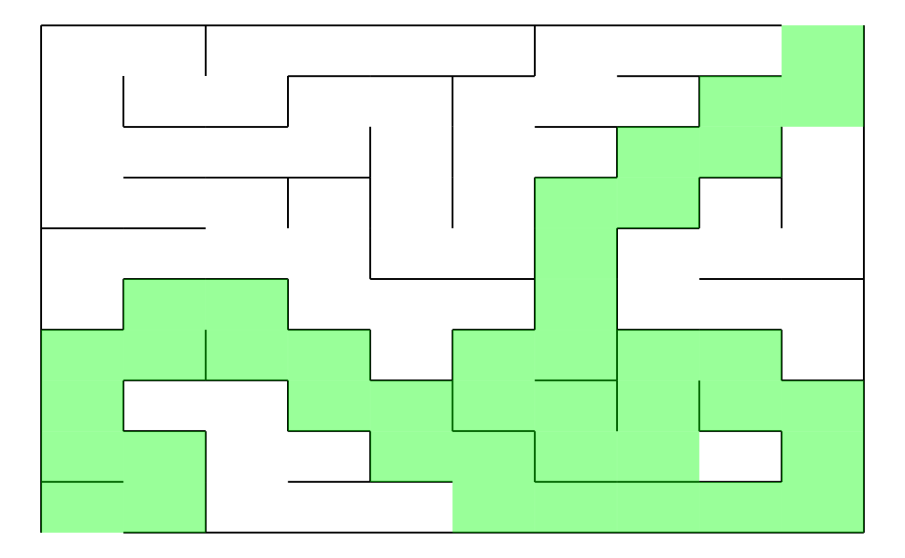

This is the README.rmd where you can find all the necessary documentation and resources related to package.
#devtools::install_github("ptds2022/groupf/RetakeExamF") # to edit
library(RetakeExamF) #call the packageRetakeExamF is a dynamic R package that empowers users to craft captivating mazes using the Depth-First Search (DFS) algorithm. Seamlessly merging educational insights and creative possibilities, this package provides a user-friendly platform to generate mazes of varying complexities.
By integrating the “igraph” package, the creation of networks composed of edges and vertices, improve the flexibility and customization of maze designs. “ggplot2” package further elevates the maze-building experience by enabling users to visualize their mazes with aesthetically pleasing layouts.
Define the number of rows and cols to give a dimension to the graph and assign it name.
Plot your name_graph.
You can have a glimpse of the final output that the package offers :
Example_maze <- RetakeExamF::myGraph (nrows = 10,ncols = 10)
Example_maze <- RetakeExamF::dfs_method(GraphMade = Example_maze)
RetakeExamF::plotmyMaze(Example_maze,nrows= 10,ncols = 10)A nice example
It is also possible to display the solution path of the existing maze as below : 
Finally the package is compatible with Shiny.
RetakeExamF::myMazeShinyApp() # shiny app experience You can find more information on DFS algorithm to build a maze here :
https://www.algosome.com/articles/maze-generation-depth-first.html
https://www.geeksforgeeks.org/random-acyclic-maze-generator-with-given-entry-and-exit-point/
https://github.com/Vessy/Rmaze/tree/master https://github.com/ehermo/monster-maze-shiny-mobile/blob/master/game/monster-maze-all.R
Please, to know more about the different functions included in igraph and ggplot2 packages, refer to the resources below :